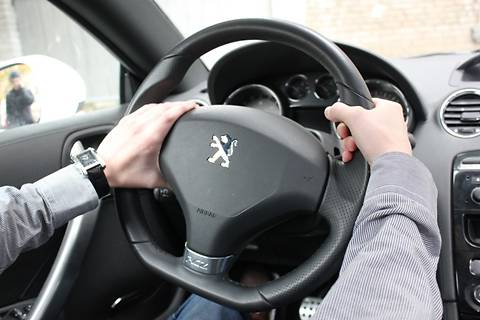

Уважаемый Посетитель !!!
В этом проекте : Учебно-информационный центр Автомобилиста - я попытался собрать наиболее полную информацию об автомобиле,которая была бы полезна прежде всего начинающему автомобилисту ...
Также в этом проекте - я попытался собрать в одном месте наиболее полную информацию о нашем будущем - об електромобилях, которая была бы полезна прежде всего покупателю и начинающему водителю электромобиля ...
Для Вас предлагаются справочные материали, где вкратце описано все необходимое для успешной и безаварийной эксплуатации Вашего друга - автомобиля .
Обзоры некоторых , наиболее важных узлов автомобиля , повторяются, приводятся мнения разных специалистов .
Что касается электронных книг - то представленные Вам электронные Книги предназначены ТОЛЬКО для ознакомления с интересующей Вас темой. В каждой электронной книге указаны Автор ( Авторы ) и Издательство.
После ознакомления с Книгой обязательно заказывайте ее бумажную копию ...
P.S.Этот Сайт не для тех , кто покупает права за баксы, и потом убивает людей или погибает сам ....
P.P.S.Этот Сайт для тех , кто считает Автомобиль своим Другом , любит его и заботится о нем ,
а также для повышения безопасности на дорогах, покоторым мы не только ездим , но и ходим ...
И еще ... Рекомендации и учебные материалы этого проекта могут быть полезны не только автомобилистам
Украины, России или СНГовенного пространства , но и всем тем , кто имеет отношение к различным транспортным средствам ...
Возможно некоторые материалы этого проекта у опытных водил вызовут снисходительную улыбку,
так вы ее спрячте , потому что крому Вас - " опытных " существуют еще миллионы начинающих авточайников
( в том числе и на каблуках ... ) для которых этот проект и создан ...
Жму Вашу руку ...
Валентин Иванович Приходько , Украина .
Безаварийной езды Вам желаю ,
а также и ни жезла и ни тупого гайца на Вашем пути ....
Sitemap.
Облако тегов :
Учебно-информационный центр Автомобилиста , библиотека автомобилиста и электромобилиста , что такое электромобиль , системы безопасности, страхование, автозаконодательство, ПДД, автокресла для детей , основные узлы автомобиля, электрооборудование, бензины, масла, присадки, автооборудование, автоистории, автоинформация